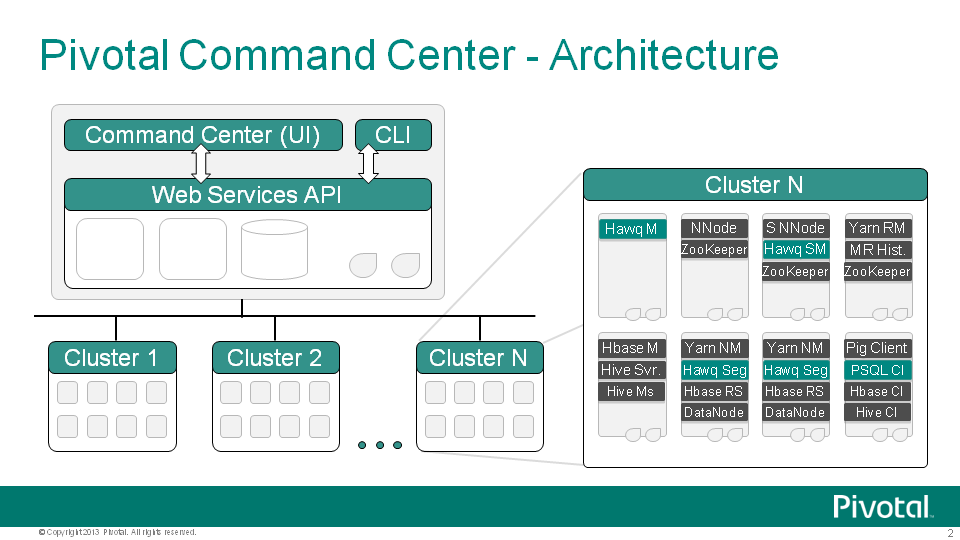

Pivotal HD Enterprise is an enterprise-capable, commercially supported distribution of Apache Hadoop 2.0 packages targeted to traditional Hadoop deployments.
This overview describes each component and how it fits into the overall architecture of Pivotal HD Enterprise.
Components
Pivotal HD Enterprise is a commercially-supported distribution of the Apache Hadoop stack including the following:
- Core Apache Stack:
- Hadoop (MR2)
- HDFS
- YARN
- Hadoop (MR1)
- MapReduce
- Zookeeper
- HBase
- Hive
- Pig
- Mahout
- Flume
- Sqoop
- HVE
- Oozie
- Hadoop (MR2)
Pivotal HD Enterprise enriches the Apache stack distribution by providing the following:
- Advanced Database Services
- HAWQ - HAWQ adds SQL's expressive power to Hadoop. By adding rich, proven parallel SQL processing facilities, HAWQ renders queries faster than any other Hadoop-based query interface.
- PXF - Extensibility layer to provide support for external data formats such as HBase and Hive.
- PHD Tools
- USS - Unified Storage System, a framework that provides HDFS Unified Storage System, a framework that provides HDFSprotocol layer on top of external file systems.
- DataLoader - High-speed data ingest tool for your Pivotal HD cluster.
- Pivotal Command Center - Pivotal Command Center (PCC) Is a Web-based interface for configuration and deployment of clusters, and for monitoring & management of a Pivotal HD environment. With the help of PCC, system administrators can determine if the PHD cluster is running efficiently, quickly diagnose functional or performance issues, and performs cluster management tasks when required.
- PRTS - Pivotal Real Time Services - Pivotal HD 1.1 includes support for GemFire XD (GFXD) Beta, an offering of PRTS. For further information about GemFire XD installation and configuration; refer to the section Configuring GemFire XD Beta .

Pivotal Command Center (PCC) includes a CLI (command line interface) and a GUI. You can deploy and configure most of the Hadoop services as well as HAWQ, PXF and USS, using the either the CLI or the GUI. You can start and stop the clusters using either the CLI or the GUI.
PCC stores the metadata for Hadoop cluster nodes and services, the cluster configuration and the system metrics in a PostgreSQL database.
See Deployment Options.

About Supported Pivotal HD Services
The following services can be deployed and configured via Pivotal Command Center CLI.
- HDFS
- YARN
- ZooKeeper
- Hbase
- Hive
- HAWQ
- PXF
- Pig
- Mahout
- USS
The following services can be deployed and configured manually (see the Stack and Tool Reference Guide for details)
- Flume
- Sqoop
- Oozie (YARN-based clusters only)
Pivotal HD 1.1 supports YARN (MR2) resource manager by default. If you don't want to deploy a YARN based cluster, we provide MR1 as optional manually-installable software, instructions for which are provided in the Pivotal HD Enterprise 1.0 Stack and Tool Reference Guide.
Note that since MR1 needs to be installed manually, you won't be able to use Pivotal Command Center for monitoring and management of the cluster.
HDFS
HDFS is a fault tolerant distributed file system which is designed to run on commodity hardware.
The following table shows HDFS service roles:
Role Name | Description |
|---|---|
NameNode | The NameNode serves as both directory namespace manager and "inode table" for the Hadoop File System (HDFS). Each HDFS deployment must have a running NameNode. |
Secondary NameNode | The Secondary NameNode periodically downloads the current NameNode image and edits log files. It joins them into a new image and uploads the new image back to the primary NameNode. |
DataNodes | A DataNode stores data in the HDFS. A functional filesystem has more than one DataNode, with data replicated across all nodes. |
Hadoop Client | A client machine has Hadoop installed with all the cluster settings, but is not a Master or Slave. Instead, the role of the client is to load data into the cluster, submit Map Reduce jobs that describe how to process the data, and then retrieve or view the results of the finished job. |
| *Journalnodes | A group of daemons to maintain the namenode edits information. These are used by both active and standby namenodes in a HA enabled cluster to keep their state synchronized. |
| *Standby Namenode | Namenode running on a different host in standby mode in a HA enabled cluster. This will take over as the active namenode if the current active namenode fails. |
*Only applicable for HA enabled clusters.
YARN
YARN is a framework that facilitates writing distributed processing frameworks and applications and supports MapReduce version 2.
The following table shows YARN service roles:
Role Name | Description |
|---|---|
Resource Manager | The ResourceManager is the master that manages all the cluster resources running on the YARN system. |
Node Manager | The NodeManager manages resources on a particular node. |
History Server | The History Server stores a history of the mapreduce jobs run on the cluster. |
ZooKeeper
Zookeeper is a centralized service that enable distributed synchronization and manages configuration across a cluster.
The following table shows ZooKeeper service roles:
Role Name | Description |
|---|---|
Zookeeper Server | ZooKeeper Quorum Servers |
HBase
HBase is a distributed, column-oriented database that uses HDFS for storing data.
The following table shows HBase service roles:
Role Name | Description |
|---|---|
HBase Master | The Master server is responsible for monitoring all RegionServer instances in the cluster, and is the interface for all metadata changes. |
HBase RegionServer | It is responsible for serving and managing regions which typically coexist with datanodes. |
| HBase Client | This is a launcher or gateway node which is used to launch hive jobs. |
Notes
- HBase requires that you have installed HDFS, YARN, and Zookeeper.
- Pivotal HD installs ZooKeeper if you have not installed it.
- Pivotal HD only supports Distributed Mode (Not Standalone Mode)
- Pivotal HD does not install the HBase Thrift Server
- HBase does not manage the Zookeeper service.
Hive
Hive is a data warehouse infrastructure that provides an interface similar to SQL on top of Hadoop.
Role Name | Description |
|---|---|
Hive Metastore | The metastore stores the metadata for all Hive tables and partitions. Postgres database is used as the datastore |
Hive Server | Also known as thrift server, is used by clients written in Java, C++ etc to access Hive |
Hive Client | This is a launcher or gateway node which is used to launch hive jobs |
Note: Hive requires HDFS and YARN.
HAWQ
HAWQ is a parallel SQL query engine that marries Pivotal Analytic Database (Greenplum) and Hadoop 2.0 and is optimized for analytics, with full transaction support. The following table shows HAWQ service roles:
Role Name | Description |
|---|---|
HAWQ Master | Stores the top-level metadata, as well as building the query plan |
HAWQ StandbyMaster | This is a standby for the HAWQ Master |
HAWQ Segments | Manages a shard of each table which typically coexist with datanodes |
Note: HAWQ requires HDFS.
PXF
PXF is an extended framework that combines the Pivotal Analytic Database engine (HAWQ) with enterprise class Apache Hadoop, HBase and Hive.The PXF service runs as a java agent on existing Hadoop, HBase and Hive nodes and enables HAWQ to consume data created by the external services.
Note : PXF requires HDFS and HAWQ.
If you do not install PXF via the CLI, and choose to install it later, refer to the HAWQ 1.0 Administrator Guide for details.
Pig
Pig is a data flow language used in the analysis of large data sets using mapreduce.
Role Name | Description |
|---|---|
Pig Client | This is a launcher or gateway node which is used to launch Pig jobs |
Note : Pig requires HDFS and YARN.
Mahout
Mahout provides a collection of distributed machine learning algorithms on Hadoop
Role Name | Description |
|---|---|
Mahout Client | This is a launcher or gateway node which is used to launch Mahout jobs |
Note : Mahout requires HDFS and YARN/MapReduce.
USS
USS (Unified Storage System) is a abstraction layer for HDFS-like storage systems that allows users access to a multitude of storage systems under a single namespace.
Role Name | Description |
|---|---|
USS Agent | This role is present on all datanodes/nodemanagers in the cluster and installs the USS library on them |
USS Namenode | The USS Namenode is a Hadoop RPC server capable of resolving USS URIs containing mount-points to their actual URIs on delegate FileSystems |
USS Catalog | The catalog stores the metadata for USS mountpoints. Postgres database is used as the datastore. |
USS Client | This is a launcher or gateway node for USS administrators to manage the USS catalog. It is installed on client nodes configured in your cluster. |
Note: USS requires HDFS
Flume
Flume is a distributed, reliable, and available service for efficiently collecting, aggregating, and moving large amounts of log data. It has a simple and flexible architecture based on streaming data flows. It is robust and fault tolerant with tunable reliability mechanisms and many failover and recovery mechanisms. It uses a simple extensible data model that allows for online analytic application.
Sqoop
Sqoop is a tool designed for efficiently transferring bulk data between Apache Hadoop and structured datastores such as relational databases. For more details, please refer to the Apache Sqoop page: http://sqoop.apache.org/
Oozie
Oozie is a workflow scheduler system to manage Apache Hadoop jobs.